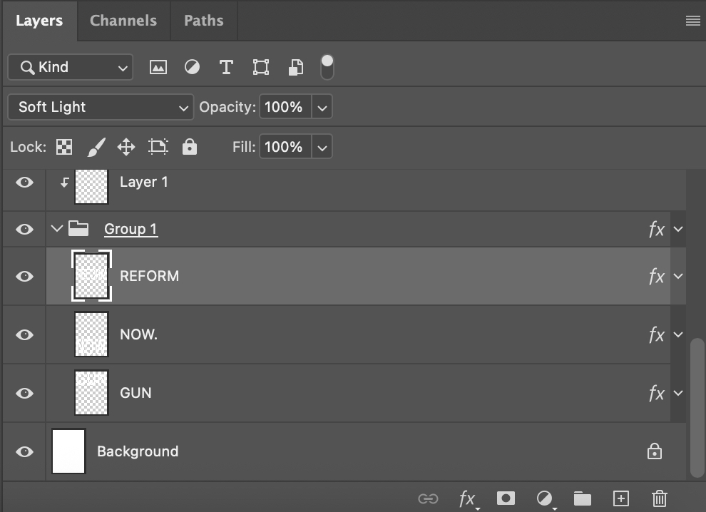
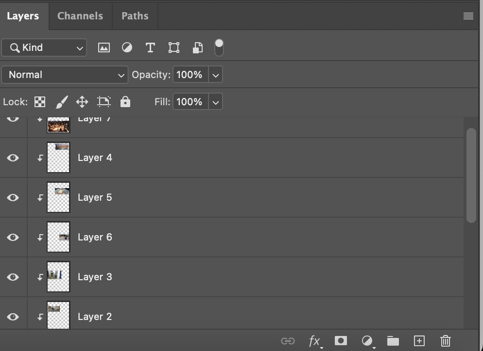

Screenshots:
 For my photomontages, I wanted to put the focus on my chosen social / political messages via large, bold text. For my ‘Save the Bees’ collage, all of the images were from the public domain, either from Wikimedia or the Internet Archive Domain Free Book Images Flickr website. The main image in this piece is a vintage photo of a bee’s nest, over which I layered another, closer-up and more modern image of a beehive. With the close-up image, I turned the blending mode to ‘Lighter Color’, which made it appear white and bright, and with it laid over the older, vintage image, there was a cool masking effect where the natural hexagons of the close-up bee hive emphasize the actual bees in the image behind it. At the bottom of the piece, I added three photos of bees on flowers. I overlaid each of the images so that they continued laterally slightly over each other, and then I made four rectangle selections, vertically, of different parts where the images laid over each other, and turned up or turned down the saturation and contrast. I added some text over the whole thing as the final step. For my ‘Gun Reform Now’ collage, again all the images were found on Wikimedia. It’s definitely a darker subject matter, and a tad insensitive, but the images I chose were security camera images of public/mass shooters, and at the bottom, one image of a memorial for people lost in a shooting. I arranged the images in a simple, rectangle photo collage with minimal overlap. But then I added the large text, and decided to create a clipping mask of the images through the large text. I changed the blend mode of the text after the clipping mask was made and there were some interesting effects. I ended up choosing the ‘Soft Light’ blending mode for the text, and it affected the images in the way of making them look slightly washed-out, and less contrasted, and I thought the appearance of the top images worked well with the bottom image, as it’s literally of soft-ish light, candlelight in the memorial.